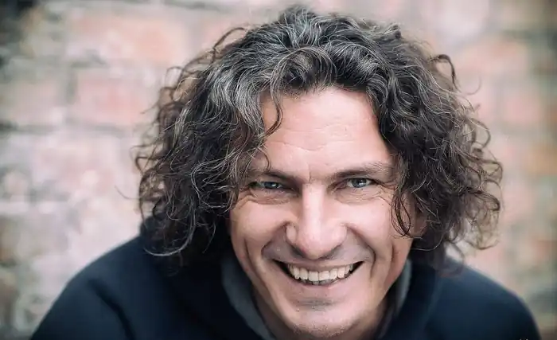
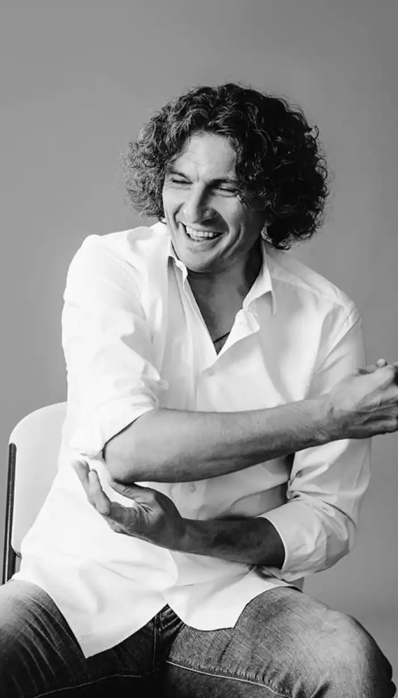
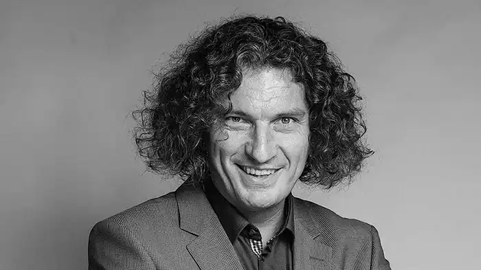

Кузьменко Андрій Вікторович народився 17 серпня 1968 року у місті Самбір Львівської області. Його мати працювала вчителем музики, а батько – інженером. Перші роки свого дитинства провів у місті Новий Розділ Львівської області. Навчався у Новороздільській спеціалізованій школі № 4 з поглибленим вивченням іноземної мови. У віці 14 років разом із родиною переїхав до міста Новояворівськ Яворівського району Львівської області. Навчався у Новояворівській середній загальноосвітній школі № 1. З дитинства цікавився музикою. Закінчив музичну школу за класом фортепіано.
У 1983 році почув гурт "Exploited", який захопив його та змусив полюбити панк-рок. Він став танцювати, ходити на дискотеки і розповсюджувати панк серед молоді – так з'явився гурт "Ланцюгова реакція". Для репетицій гурту використовували актовий зал школи, де він вчився. Гурт грав на танцях; тоді було дуже модно, коли на танцях грав живий гурт. Співали українською, англійською та російською мовами. Мав шалену популярність у школі, граючи на шкільних дискотеках. Граючи панк-рок поступово захопився стилем нью-романтік.
У 1985 році, після закінчення школи, намагався вступити до Львівського медичного інституту, але це йому не вдалося. Тоді він вирушив до міста Петрозаводськ (Карелія, Російська Федерація), де поступив до Петрозаводського медичного інституту. У 1986 році, після завершення першого курсу навчання, був мобілізований на строкову службу у лави Радянської Армії. Служив у місті Калінін (з 1990 року – Твер). У 1987 році, після повернення з армії, перевівся на факультет стоматології Львівського медичного інституту (нині – Львівський національний медичний університет імені Данила Галицького). Навчання там було йому нецікаве, однак він довчився на прохання батьків, закінчивши інститут у 1993 році. Ще під час навчання у медичному інституту вирішив пов'язати своє життя з музикою. У 1987 році написав пісні "Lucky Now", "Brother", "Так То Вже Є" (більшість пісень тоді писалися англійською, а у разі необхідності перекладалися українською мовою). У 1988-1989 роках у Новояворівську була заснована андеграундна студія "Sпати", до якої він вступив, продовжуючи грати хардкор-панк у "Ланцюговій реакції" та гурті "Наша контора". Невдовзі бере участь в діяльності гуртів "Асоціація Джентльменів", "УКО", "Труна", "Death Time Boys", "Реанімація" (грає на гітарі, співає, є автором музики, текстів і обличчям усіх цих гуртів). Були і сольні проекти в стилях психоделік і нью-романтік (пісні "Душа і плоть", "Love Me To Death", "Ліза", "Texas Song" тощо). У 1989 році разом із друзями засновує гурт "Скрябін", де починає виступати під псевдонімом Кузьма. У гурті виконував роль вокаліста, автора текстів та музики. Того ж року гурт записує свій перший альбом "Чуєш біль". У 1991 році гурт "Скрябін" вперше виступає на великій сцені у військовій частині та бере участь у фестивалі "Червона Рута" в Запоріжжі, де пісня "На даху добре" посідає третє місце в жанрі поп. У 1992 році виходить у світ альбом "Технофайт" і з цим матеріалом гурт здійснив маленький міський концертний тур з "живим" звуком. На "Студії Лева" гурт записує пісню до альбому "Технофайт" – "Нікому то не треба", після чого тимчасово призупиняє свою діяльність. Кузьма робить декілька авантюрних подорожей у Німеччину на старенькій "Побєді", зокрема на фестиваль "Berlin Independent Days". У Берліні у нього з'явилися справжні друзі – гурт "Comouflage", лідер якої подарував "Скрябіну" їх перші власні клавіші "AKAI". Гурт "Скрябін" грає в нічних клубах у стилі нью-романтік й техно. Саме на таких виступах Кузьма почав експериментувати з діджейським устаткуванням і сучасними звуками. Період важких спадів, коли гурт "Скрябін" перебував на межі розпаду, скінчився в середині 1994 року. Восени 1994 року гурт протягом семи ночей записав альбом "Птахи", який приніс гурту "Скрябін" популярність у всій Україні. Протягом 1995 року гурт "Скрябін" бере участь у багатьох фестивалях та акціях ("Мелодія'95" – перше місце за пісню "Птахи"; "Нові зірки старого року" – друге місце; "Вітер зі сходу"; "Музичний сендвіч"; "Марія"; "Попсо Франко"; "Донецьк запрошує друзів"; "Форум для діаспори з Канади"; "Таврійські Ігри-1995"; "Музиканти проти наркоманії й алкоголізму") та дає багато концертів. 1 січня 1996 року гурт "Скрябін" підписує контракт зі студією "Nova". Як результат – у світ виходить альбом "Казки" та кліп "Train", який займає перші місця в хіт-параді "Територія А". 30 травня 1996 року на конкурсі від "Території А" – "Територія – Данс" гурт "Скрябін" перемагає. На "Таврійських іграх" гурт "Скрябін" одержав почесне звання "Кращий поп-гурт року". Знімається кліп "Той Прикрий Світ", що відразу попадає на вершину хіт-парада "Території А". Влітку гурт "Скрябін" їздить як "розігріваючі" для концертів співачки Ірини Білик. У січні 1997 року виходить кліп "Той Прикрий Світ", гурт покидає "Територію А". Компанія "NAC" випускає відразу три касети гурту: "Казки" (том 1, том 2) і "Мова Риб". 23 травня 1997 року у будинку культури Київського інституту інженерів цивільної авіації гурт дає сольний концерт. За червень 1997 року гурт "Скрябін" дає 22 концерти, а у Києві на "Караван CD" офіційно презентують касету "Молотов-20" й CD "Мова Риб". 5 липня 1997 року гурт "Скрябін" стає "Найпопулярнішим альтернативним гуртом" 1997 року, отримує нагороду фестивалю – перо жар-птиці. 20 листопада 1997 року – офіційний день відкриття студії "Sпати" у Києві. В січні 1997 року Кузьма веде програму "CD ROM" на радіо "Супернова" під ім'ям DJ Smith і крутить музику вживу на платівках. У світ виходить альбом "Казки". А восени 1997 року, коли Кузьмі знову більше імпонує нью-романтік, він починає випускати свою власну програму "Клітка". 14 грудня 1997 року в Києві відбувся концерт "Пісня Року", де гурт "Скрябін" перемагає у номінації "Кращий альтернативний гурт року". У березні 1998 року проходить "зелений" тур по Україні. У липні 1998 року виходить у світ альбом "Танець Пінгвіна". У серпні 1998 року гурт "Скрябін" знову бере участь в "Таврійських Іграх" та висувається одразу в 7 номінаціях (рекорд фестивалю). Також гурт "Скрябін" дає сольний концерт у Львові та Києві. Лейбл "Boom Records" випускає CD з перезаписаним наново альбомом "Технофайт". У 1998 році гурт "Скрябін" стає учасником у концерті "Мелорами" в Запоріжжі. 14 грудня 1998 року в Росії записаний диск із каверами на пісні "Depeche Mode", де гурт "Скрябін" став єдиним українським гуртом з піснею "Я твій пасажир". 16 грудня 1998 року на церемонії нагородження "Золотої Жар-Птиці" гурт визнано, як "Кращий поп-гурт". 27 грудня 1998 року презентується кліп на пісню "Брудна, як ангел". У 1999 році гурт "Скрябін" розпочинає етно-проект "Еутерпа" (синтез прадавнього автентичного фольклору та сучасних технологій). Також гурт "Скрябін" складає акомпанемент у записі альбому пісень вояків ОУН-УПА "Наші партизани". У 2000 році гурт "Скрябін" випускає альбом "Модна країна". У жовтні 2001 року студія "Sпати" випускає на компакт-диску альбом "Стриптиз". Закінчується контракт з "Таврійськими Іграми" і студія "Sпати" знову стає віртуальною. Однак гурт знаходить покровителів у вигляді виборчого блоку "Команда Озимого Покоління" і терміново виходить альбом "Озимі Люди". Згодом лейбл "Атлантік" перевидає доповнений альбом "Стриптиз+", а у листопаді 2002 року – недопрацьований альбом "Kozzzak Діско". Лейбл "Lavina Music" в травні 2003 року випускає компакт-диск "Натура". Після цього відбувається всеукраїнський тур на підтримку диска "Натура". Під час Помаранчевої революції 2004 року учасники гурту "Скрябін" підтримували різні політичні сили, фактично через це старий склад гурту "Скрябін" був перекреслений і почалася нова ера в історії гурту. Кузьма із новим складом гурту "Скрябін" починає творити кардинально іншу музику. Головною зміною став перехід від електроніки до більш живого поп-рокового звучання, а електронну складову було зведено до мінімуму. 14 квітня 2005 року виходить альбом "Танго". 14 вересня 2006 року світ побачив альбом "Гламур". У 2006 році Андрій Кузьменко проявив себе як талановитий письменник після видання його власної книги-автобіографії "Я, Побєда і Берлін". Вона мала шалену популярність та кілька разів перевидавалася. Є також аудіоверсія книги, де твір читає сам автор. 27 липня 2007 року виходить альбом-проект латиноамериканських версій кращих хітів гурту – "Скрябінос Мучачос". 22 листопада 2007 року виходить альбом "Про любов? ". На пісні "Хлопці Олігархи" і "Шмата" було знято кліпи. Наступний альбом гурту "Скрябін" під назвою "Моя еволюція" вийшов у грудні 2009 року. Було знято кліпи на композиції "Тепла зима", "Кинули", "Випускний", "Пусти мене" і "Квінти". На підтримку альбому організовано концертний тур містами України. В листопаді 2010 року вийшов "Андріївський Unplugged" – запис виступу на студії радіо "Львівська Хвиля". 21 травня 2011 року гурт дав концерт у Росії, який пройшов в Санкт-Петербурзі. Було знято кліп на пісню "Маршрутка". 24 вересня 2011 року гурт "Скрябін" виступив на готичному фестивалі "Діти Ночі: Чорна Рада" з ретро-програмою, гурт виконав 8 старих пісень. У квітні 2012 року вийшов новий альбом "Радіо любов", до якого увійшли 10 композицій. Також випущено обмежене спеціальне видання альбому, до якого увійшли ще 7 бонус-треків, а також відзняті кліпи на пісні "Говорили і курили", "Місця щасливих людей" та "Мам". Тоді ж виходить сольний проект Кузьми під назвою "Злий репер Зеник", який поширювався безкоштовно через мережу інтернет. 5 липня 2013 року у Києві в Зеленому Театрі відбулась прем'єра нового альбому гурту "Скрябін" під назвою "Добряк". В підтримку альбому з простою назвою "25" навесні 2014 року відбулось всеукраїнське турне. В рамках туру 4 квітня 2014 року в київському клубі Stereo Plaza пройшло велике концертне шоу. 1 лютого 2015 року гурт "Скрябін" дав концерт у місті Кривий Ріг Дніпропетровської області, присвячений 25-річчю гурту. Рано вранці 2 лютого 2015 року Андрій Кузьменко виїхав з Кривого Рогу до Києва за кермом свого позашляховика Тойота Секвойя (Toyota Sequoia), в той день він повинен був летіти за кордон і поспішав в аеропорт, дорога була слизька від дощу і морозу.